Project Background

Public childcare primarily serves infants and toddlers aged 2 months to 2 years old, as well as parents registered in Taipei City. Eligible parents can visit the Social Affairs Bureau's public childcare website, read the relevant guidelines, and complete the registration form to participate in the waitlist or lottery for available spots. Each year, many anxious parents hope to secure public childcare services to alleviate the pressures of raising young children.
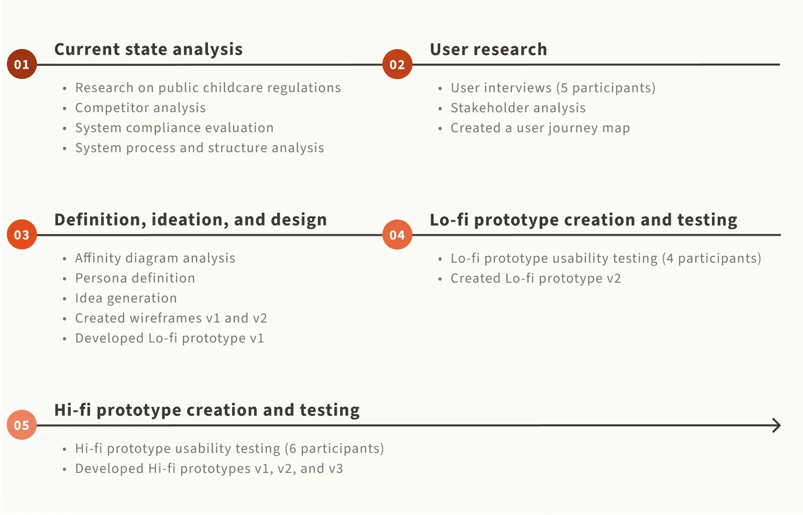
Problem Definition
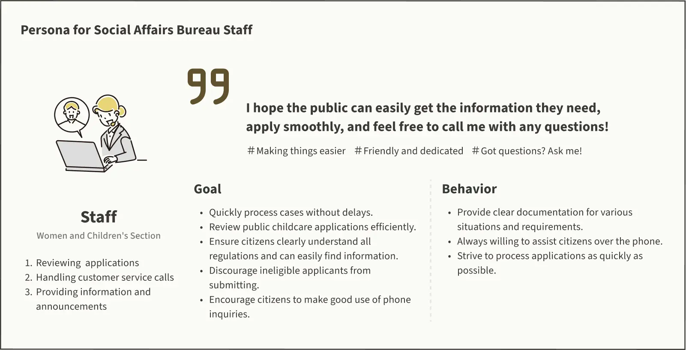
In response to the nature of public services and childcare services, the following three design challenges remain:
All users are beginners
The public childcare service is used infrequently (1-2 times per year), so the design must treat every user as a first-time user.
Extensive childcare information
With rules varying by publication year and complex eligibility and priority criteria, it is crucial to ensure users can clearly understand the information provided.
Diverse user types and scenarios
As a public service catering to a wide audience, users will have diverse motivations and needs, requiring thoughtful consideration of different usage scenarios.
Current State Analysis
Stakeholder Map
Focus on the issues parents face during the stages of selecting childcare institutions, applying, and retrieving information.
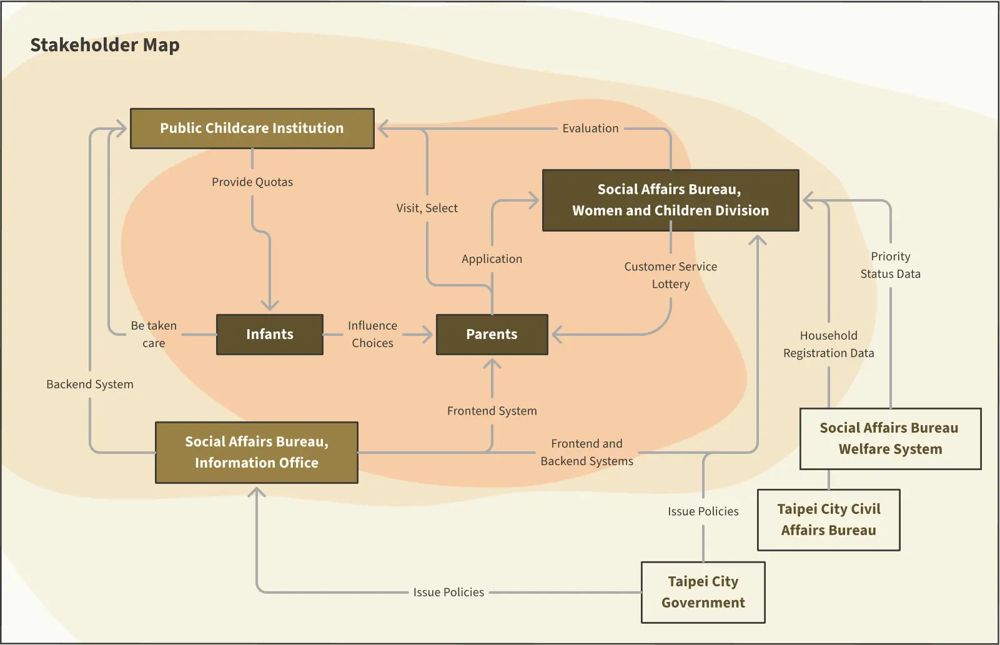
Usability evaluation and cognitive walkthrough
The main issues are cluttered information and difficulty understanding lottery regulations.


Insufficient Error Prevention, Lack of Consistency, and Missing Assistance
We rated issues on a scale of 1 to 4 based on their severity. Among the 64 usability problems identified, the most critical were insufficient error prevention, lack of consistency, and the absence of help or guidance.
Scattered Documents and Poorly Organized Forms
Through the team's cognitive walkthrough of three main tasks—understanding rules, finding childcare institution information, and registration—it was observed that although the process is simple and linear, disorganized documents, inconsistent text and color usage, and cluttered form layouts significantly reduce users' efficiency in reading and locating information.
We interviewed six parents and summarized the results into ==three personas==
Personas and User Variables
Based on varying motivation levels and information needs, users can be categorized into three types.
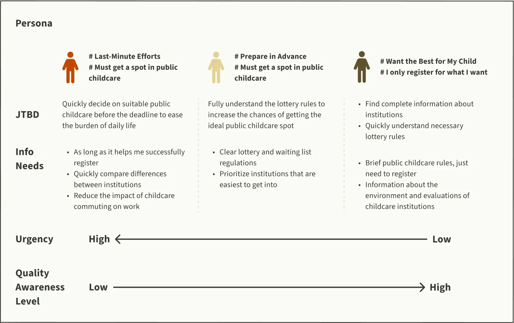
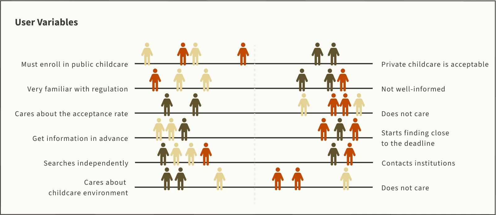

Based on the current situation and user interview results, we identified ==three issues where the system fails to meet user needs== and developed corresponding design solutions.
Problem Convergence
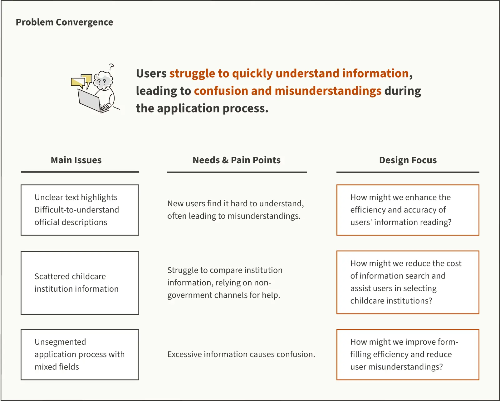
Solutions
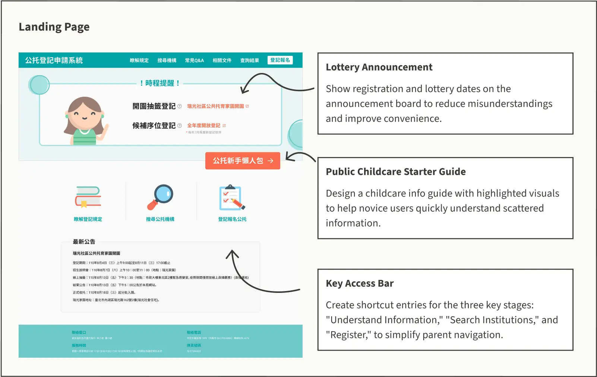
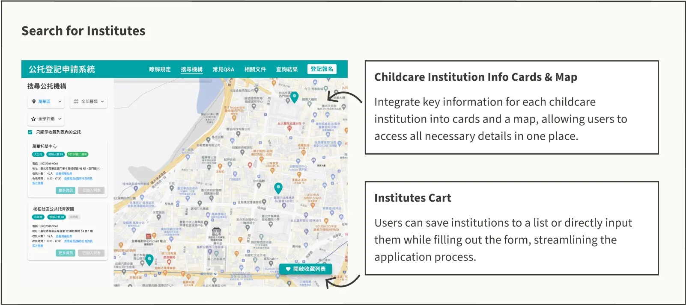
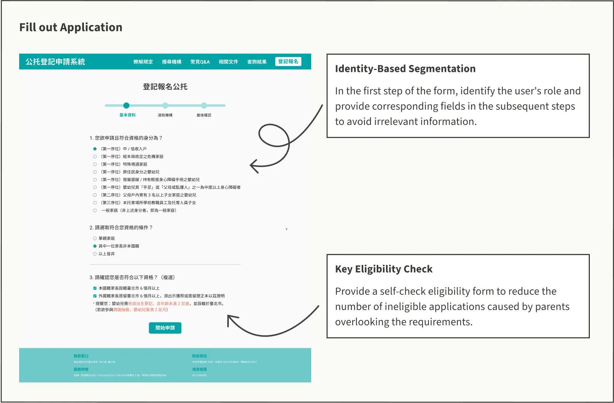
We also found that parents ==frequently use their mobile phones== for service applications in daily scenarios, so we decided to optimize the ==RWD interface.==
Additional Finding
Due to childcare needs and busy work schedules, parents often rely on their mobile phones for complex information searches and applications.
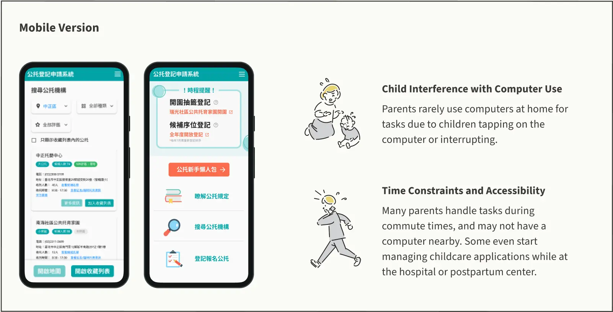
Concept Validation
Qualitative feedback from testing shows that the final design successfully addresses the issues originally identified.
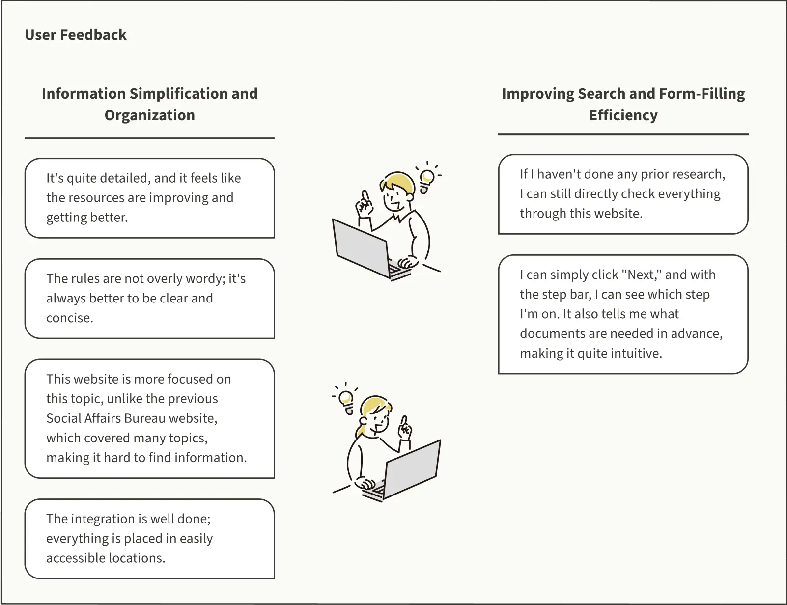
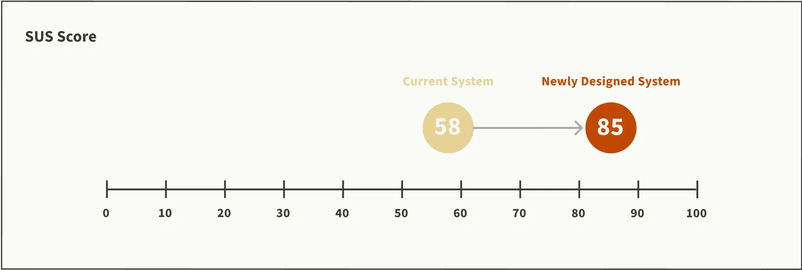
Proposal

Due to the inherent difficulty of implementing website reforms in the government, we broke down all solutions into the following three approaches and guided Social Affairs Bureau staff, including the Women's and Children's Section staff, Section Chief, and Digital Minister Audrey Tang, to interact with the prototype. All government officials were highly satisfied with our design:
- Minimal Cost Solution: No website development needed, only reorganizing information.
- Priority Solution for Maximum Benefit: In addition to redesigning the information, prioritize improving the form-filling experience.
- Full Solution for Maximum User Experience Optimization: Complete solution with all improvements.